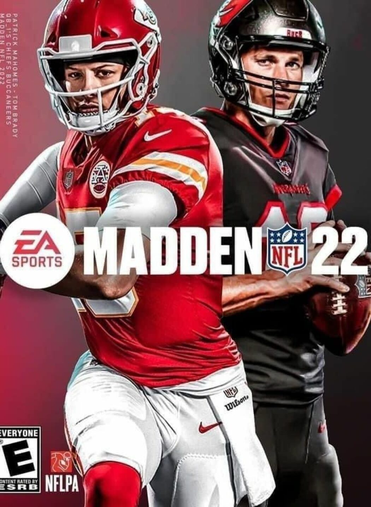
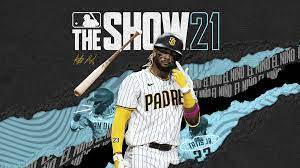
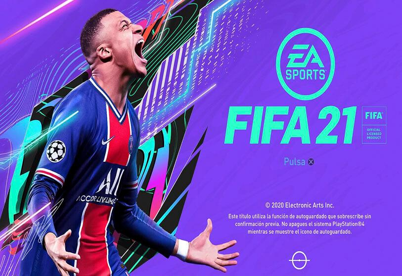

These are some of the newest up and coming sports video games. These range from soccer, football, and hockey, etc. Opinons on these games are varied and there is plenty to report on them.

Summary
In this game you get to play as ypur favorite Basketball players and teams. You are able to do things such as create your own player and teams. When you create your player you are able to be placed in as if you have a career and then you can play online with others on that character. This is just one of many features int this game.
News
As of right now a lot of the news surrounding NBA 2k22 has been mostly positive. Lots of the news and reviews of the game have benn on the higher end. No one is callling it the perfect game, however most reviews have given it a high score.
Summary
This game allows you to suit up as your favorite teams and play agianst your opponent. You can take your skills online or you can play with a couple of friends at your house. There several gamemodes that have been adjusted from their previous installments such as the updated Franchise mode where you can own a team and manage it.
News
As for News talking about Madden 22. There have been a lot of reviews going for it saying that it is an okay. IGN reports it as "a grab bag of decent". They gave it a score of 6/10 and it looks like there is major space for improvement on the game.
Summary
In this game you are able to play as major league baseball teams. You can play offline with a computer or online with friends. In this game there is a gamemode that has been updated called Diamond Dynasty. In this mode you play through events, an online gamemode, and even a battle royale.
News
As of right now there is no major news on MLB the Show. However, reviews for the game have been positive. Their game has recieved 8/10 from IGN and 78% on Metacritic.

Summary
In this game you are able to play as any hockey team. This game has several interesting game modes. Players have the choice to join the CHL in Europe or the NHL in America giving the player lots of choices. They are also able to make choices and use skill trees to choose how their in game players would plan out.
News
Right now there is no major news for NHL 21. But this is one of those situatations where no news is good news. Happily, there have been mostly solid reviews of the game. The only problem some people have with it is that it feels a little same to NHL 20. But for the most part highly reviewed.
Summary
In FIFA 21 there are a variety of seperate game modes that allow you to experience the game of soccer. There is a Career mode, Ultimate team mode, Tournaments, Online modes, and more. You are able to create your own character that can have their soccer career. It is a fully customizable player with no two being the same.
News
As of right now there is some news concerning the loot boxes in FIFA 21. In game there is a mode where you are able to spend real money for in game characters. It has been called into questioning whether or not this is a form of gambling. Other than that the game is pretty highly reviwed.
Highest Rated Games of Each Series
| Game Series | Game | Score |
| FIFA | FIFA Soccer 10 | Metacritic: 91% IGN: 9/10 |
| NHL | NHL 14 | Metacritic: 80% IGN: 8.3/10 |
| MLB | MLB 10: The Show | Metacritic: 91% IGN: 8.9/10 |
| Madden | Madden NFL 2003 | Metacritic: 95% IGN: 9.1/10 |
| NBA | NBA 2K2 | Metacritic: 93% IGN: 9.4/10 |